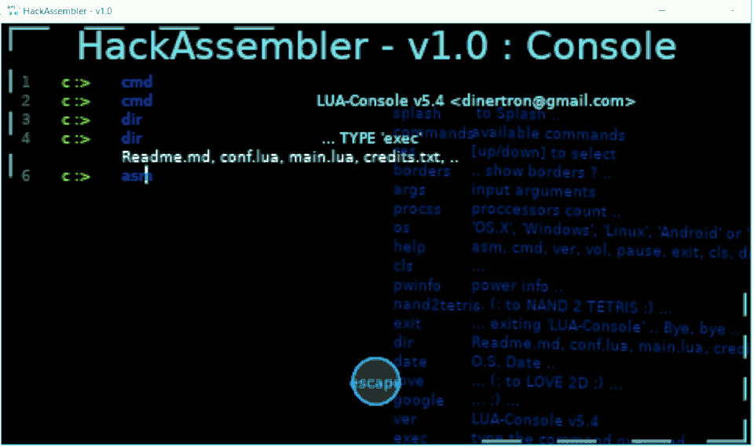
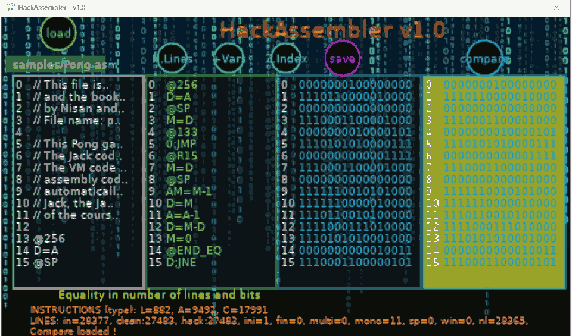

Hack-Assembler API v1.0 by GuerraTron-24
Hack-Assembler API v1.0 by GuerraTron-24
'HackAssembler' (Lua LÖVE Program) - Ensamblador de archivos ".asm" de tipo "HACK". Siguiendo un curso en https://www.nand2tetris.org/course.
Author: Juan José Guerra Haba - dinertron@gmail.com - Julio, 2024
Web: https://guerratron.github.io/ , https://grtron.es
License: Free BSD. & Open GPL v.3. Keep credit, please.
Idea Original: GuerraTron24
Versión: 1.0.0
Proyect: Hack-Assembler Lua-Löve Package: / Entry-Point: main.lua
Hack-Assembler API v1.0 by GuerraTron-24⚙️
Ensamblador en lenguage máquina HACK-ASM, tanto de forma mnemónica (simbólica) como binaria, es un Ensamblador de archivos .asm de tipo HACK con una interfaz mini-REPL.
Esta app convierte código HACK-ASM a binario HACK-BIN (con formato de texto plano) para poder reproducirse en la máquina virtual "Hack Computer".
Digamos que es el contenedor para el ensamblador, ya que además puede realizar otras tareas (y más que se integrarán en futuras versiones) como para considerarse una herramienta con múltiples usos.
La app permite parsear un archivo '*.asm' (con mnemónicos Hack) y convertirlo a '*.hack' (binario en texto) todo ello de forma visualmente atractiva.
También permite la comparación del binario optenido con un segundo archivo '*.hack' mostrando los resultados en la zona de mensajes inferior.
Tiene otros añadidos como información in-situ de cada bit transformado, visualización de la tabla de mapeo de la memoria, otras tablas informativas sobre los principales campos y operaciones permitidas en la ALU, .. además como extra poder obtener un código ASM final mucho más limpio y puro donde se sustituyen valores de variables y labels por sus referencias directas en el mapa de memoria.
"Espero que esta herramienta pueda servir de ayuda a otros programadores como lo ha sido para mí, para el parseo de archivos asm pequeños va de lujo !" by GuerraTron24
ATENCIÓN: Debido a la naturaleza OOP la app consume bastantes recursos del ordenador (RAM) para parsear y mostrar todos los datos visualmente, también en parte por la utilización de los text-area como campos duplicados de líneas de archivo.
Pero es INCREÍBLEMENTE RÁPIDA en el análisis de archivos medianamente grandes, por ejemplo con el archivo Pong.asm (500 Kb, 28377 líneas) la visualización y comparación así como el guardado de archivos de salvado ha sido INSTANTÁNEA, pero el consumo del programa en memoria ha resultado en unos "12 Mb".
Por eso, Hay que tener precaución al utilizarlo en dispositivos con muy pocos recursos.
📋
HackAssembler: Este es el resultado del completísimo curso NAND2Tetris donde terminas construyendo, de forma ideal, un PC partiendo de los elementos más básicos como son las puertas lógicas Nand hasta elementos más complicados como estructuras de registros y memorias, ALU, .. hasta llegar a un mini-VC con todo el hardware simulado mediante software.
Precísamente este ensamblador es la práctica del tema '6. Assembler' donde instan a construir tu propio ensamblador para lenguage máquina ASM-HACK-BIN escrito en un lenguage de tu elección. En este caso he elegido el lenguage LUA (utilizando el frameworkLÖVE), aunque también he creado otra versión más visual en javascript (pero infinitamente más lenta).
Esta versión se ha basado en otra anterior orientada a navegadores web codificada en javascript "HackAssembler.js v1.0.1".
⌨️
Dos modos de funcionamiento con UI o sin ella, apariencia REPL, análisis rapidísimo del código "asm", generación instantánea del código Hack y respaldo de otros archivos de utilidad en la carpeta del usuario del S.O.
La parte más original de la APP, a mi parecer, es precísamente lo que no es "ensamblador", quiero decir la forma de llegar al ensamblador a través de una pantalla tipo consola o terminal ⌨️ donde se permiten introducir comandos como asm para la ejecución de este ensamblador, u otros como help, dir, cmd, ver, exec, help, .. .
Así que tenemos una app tipo REPL, con temática retro-futurista, con aspecto de app terminal-8-bits basado en consola tipo MS-Dos, con altas prestaciones y colores neón (casi cyberpunk), ... y encima programado en LÖVE (Lua 5.1), ...
¡ QUE MÁS SE PUEDE PEDIR !, el disfrute está asegurado para todos los que añoren los años 80's.
P.D: La APP sólo se ha podido probar en una máquina potente moderna (i7-64bits, 12Gb RAM, 2 Tb HDD) nada retro-futurista, y consume entre 2 y 30 Mb de memoria (dependiendo del tiempo de uso y la cantidad de comandos ejecutados).
🔧
(BÁSICOS)
- asm. Pantalla para el Ensamblador donde comprobamos visualmente el código ASM-HACK y podemos realizar comparación con otros archivos Hack.
- help. Pantalla de ayuda.
- exit. Salir de la APP guardando los avances conseguidos.
- escape. Salir de la APP SIN guardar los avances.
- ... y muchos otros comandos de utilidad (escribir 'commands').

📌
https://www.nand2tetris.org/course
🎁
... Muchas gracias a todos, en especial: a SheePolution por su estupendo tutorial en LÖVE y en general a todo el mundo altruista que genera código y lo dispone open-source.
... y sobre todo al mundo terminal-cyberpunk por la estética retro-futurista acuñada.
✒️
:: BY: Juan Jose Guerra Haba dinertron@gmail.com GuerraTron24
⌨️ con ❤️ por Juan José Guerra 😊